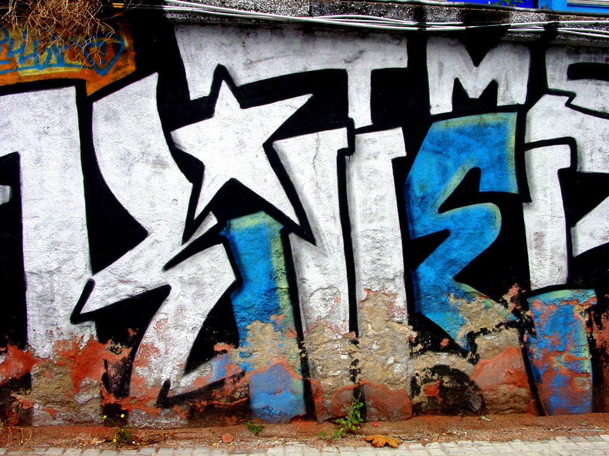

دیجیکالا از ابتدا تنها کالاهای دیجتالی و الکترونیکی را به صورت آنلاین به فروشگاه آنلاینفروش میرساند تا اینکه از سال ۱۳۹۳ از فروش کالای دیجیتال به فروش دیجیتال کالا تغییر استراتژی داد و از آن پس به کالا در تمامی دستههای کالایی تبدیل شد. از جمله اقلام موجود در فروشگاه آنلاین دیجیکالا میتوان به کالاهای دیجیتال، لوازم آرایشی، بهداشتی و سلامت، خودرو، ابزار و اداری، مد و پوشاک، لوازم خانه و آشپزخانه، کتاب، لوازم تحریر و هنر، اسباب بازی، کودک و نوزاد و تجهیزات ورزش و سفر اشاره کرد. سوپرمارکت دیجیکالا نیز در تیرماه تابستان ۱۳۹۷ با پیوستن روکولند به این مجموعه اضافه شدهاست. برخی از این کالاها دارای گارانتی از نمایندگیهای مختلف هستند و در مورد تعدادی از کالاها امکان تعویض یا پس دادن کالا تا هفت روز وجود دارد. بیشتر کالاها دارای توضیحات، نقد و بررسی هستند و کاربران میتوانند دیدگاه و امتیاز و نقد خود را دربارهٔ هر کالا برای سایر کاربران به اشتراک بگذارند.
